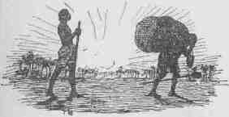
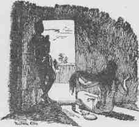
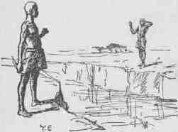

A coloured South African, and student of the ancient near east.


Last year, our ROK colleague Ted Deever covered the biblical story of Joseph and Potiphar’s’ wife. His piece highlighted two concerns. One, the civilized world has a long tradition of the rape hoax motif. And two, there is a mainstream refusal to acknowledge the existence a false accusation. Respectfully, I would like to expand on these points.
While the Genesis 39 myth effectively delivers its wisdom, it’s not the original. This duplicitous game, seemingly inherent to the nature of women, was exposed significantly earlier in human history. Its original form, to my knowledge (challengers welcome), is in the Tale of Two Brothers.
The rape hoax motif has been with us for more than three millennia, yet mainstream opinion disregards it. In fact, liberal academics have worked hard to show that even when a story emphasizes the falseness of an accusation, a wonder of intellectual imagination can be performed to ensure that a woman’s word is always truthful.
This story dates to the 13th century before the Christian era. Anubis and Bata are brothers who live on an estate. The elder Anubis is married and owns a home. The younger Bata works for his brother, and lives with him and his wife.

One day while working in the field, Anubis sends Bata to fetch some seed from the house. Back home, Bata encounters his sister-in law braiding her hair. She refuses to get the seed from the storeroom while her hairdo is unfinished and tells him to get it himself.
When she sees how much seed he is able to carry, she attempts to seduce him:
There is great strength in you. I see your vigor daily. Come, let us spend an hour lying together. It will be good for you. And I will make fine clothes for you.

He declines, saying that she is like a mother to him as his brother is like a father. He goes back to work, but the wife is anxious about the things she had said. Later, when Anubis arrives home, she claims that Bata assaulted her.
Her story is that Bata came onto her, she refused, so he attacked her. Anubis believes his wife and, as per her request, intends to murder his brother.
Now if you let him live, I shall die! Look, when he returns, do not let him live!
Anubis, spear in hand, pursues Bata. He is about to slaughter his brother when the god Pre-Harakhti intervenes. The sun-god creates a crocodile filled river, separating the two.
From his side, Anubis proclaims the reason for his bloodlust. Unable to convince his brother of his innocence, Bata swears:
As to your coming to kill me wrongfully you carried your spear on the testimony of a filthy whore!

With that, Bata pulls out a knife, castrates himself and throws his phallus into the water. Anubis is distraught but cannot reach his brother. Bata grows weak and dies. Now convinced that Bata was innocent, Anubis goes home, kills his wife, casts her body to the dogs and mourns his little brother.
The tale is long and contains many traditional motifs. However, the rape hoax episode is the part that folklorists have avoided classifying. Older generations mostly found it too vulgar for serious inquiry. So naturally, liberal scholars find it appealing.
The official liberal interpretation is now inextricably linked to what they speciously call the Potiphar’s Wife motif. The tale is only told from Bata’s point of view. And he had a low social position. So he surely fantasized about possessing his big brother’s life and wife. He must have felt extremely guilty for these latent desires.
To avoid remorse, he unconsciously projected his internal state onto his sister-in law. This is one of those role reversals liberals are so keen on. Bata’s wishful thinking is a typical blame the victim process called “projective inversion” (Dundes 2002:385). He wanted her, so his story makes her want him.
From his initial displays of seed-carrying power, to later depictions of him as a bull. Bata is a soft target for rape hoax symbologists.
Consequently, his self-emasculation resulted from his actual guilt for raping her. It’s not proof of his innocence or loyalty. And with Bata guilty of this inherently male crime, a woman can literally never be cast as the villain in a he said/she said story.
Meanwhile, a guilty Joseph was acting out his odd clothing fetish again.
This academic endorsement of the original rape hoax does two things. First, it assumes her innocence and his guilt based on gender and social status. Then it forces the text to say things that it clearly doesn’t. The text does not acknowledge this suppressed, latent, or symbolic content.
The problem with any form of prejudice is that it’s very hard to hide. That an interpretation of such a simple story should require a needlessly convoluted psychological analysis is evidence of an opinion irrationally formed by a pre-existing prejudice.
Tales impart lessons, and the lesson from this motif is as simple and straightforward as the narrative itself. The patriarchal family has a strong moral foundation. A code of honour between men is more important than lies and vengeance. This is emphasized by the fact that the women in both the Egyptian and biblical versions are not named.
Liberal academics have here managed to turn a lesson in morality into an endorsement for a rape hoax. I hope that when the ancient texts of a long lost matriarchal society are discovered, we are allowed to peddle similarly contrived interpretations through the education system.
Read More: The Biggest Rape Hoax In History